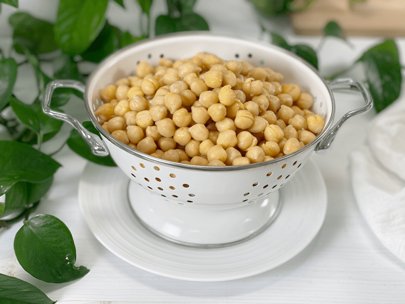
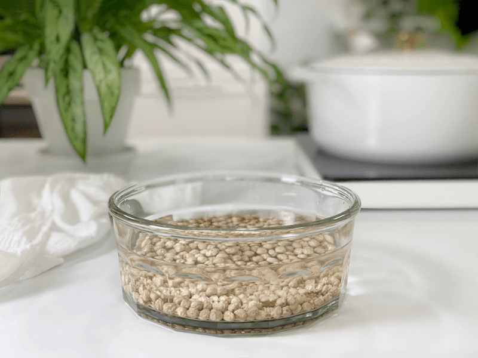
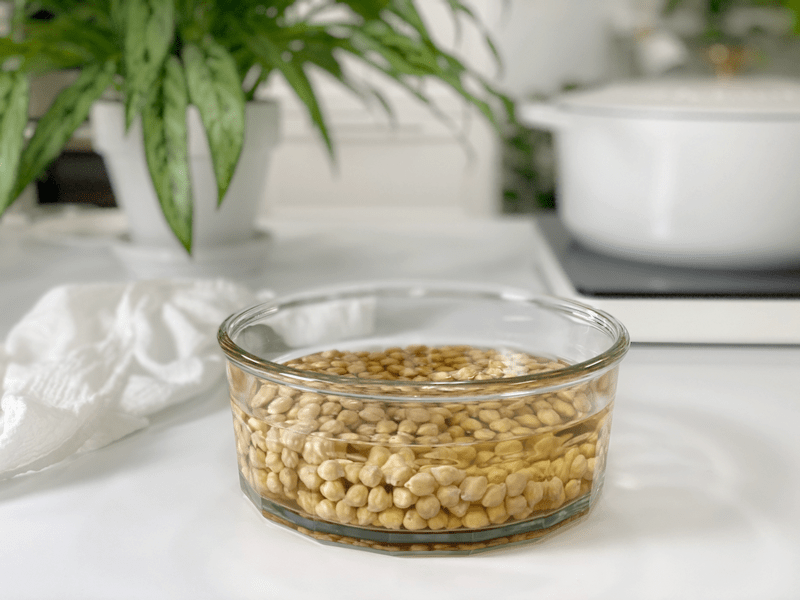
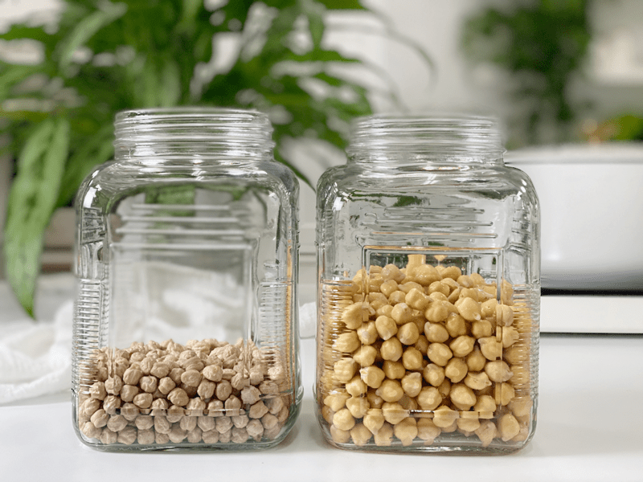
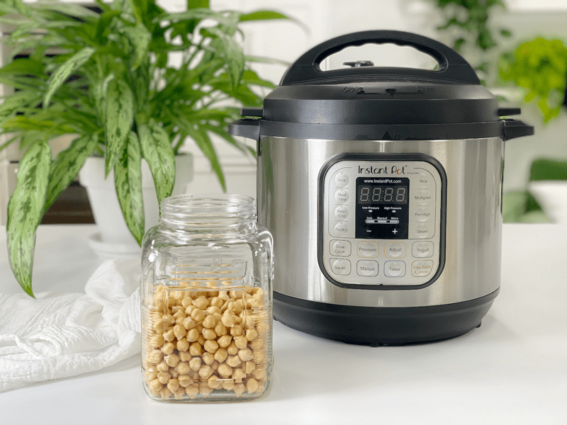
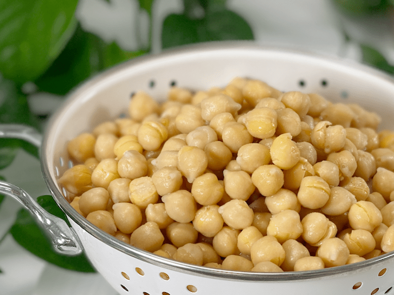

Chickpeas | Soaked | Instant Pot |Stovetop
The grueling question that I often hear: “Is it worth the time to cook dried beans or legumes?” If you have frequented my site long enough, you already know my answer. For those of you who don’t know me… the answer is YES! I believe in cooking from scratch because I can control the quality of my food. I don’t have to put up with added ingredients, I can boost their nutritional content through the process, and it’s less expensive. Does it take more time? You betcha. But again, it’s worth every step of the process. It just takes a little thought until the habit is formed. And trust me, in time, things will become second nature.

But I get it; we all lead different lifestyles and sometimes there just isn’t enough time in the day to get everything done. I am not here to judge you if you decide to crack open a can. Heck, I do it from time to time. A huge factor in making the decision between dried or canned chickpeas is how much time you have to cook. If you’re in a rush or pressed for time, then opening a can and rinsing some chickpeas is the way to go.
Today, I’m going to show you how to cook chickpeas using two different methods: Instant Pot and stove top. Regardless of method, it’s important to know that I always SOAK my beans, legumes, grains, nuts, seeds, etc. before cooking them. I do it for health reasons, and the bonus is that it speeds up the cook time.
Home-Cooked versus Store-Bought Chickpeas
Home-Cooked
- I find the home-cooked chickpeas have a clean, light, rich flavor and their texture is infinitely creamier.
- 3 cups of cooked chickpeas are equivalent to two (15 oz) cans of chickpeas.
- 1 cup of dried chickpeas = 3 cups cooked.
- Cooking from scratch saves money.
- You can batch cook the beans, storing pre-measured amounts in the freezer. Take that, you canned chickpeas!
Store-Bought (canned)
- Some people detect a metallic taste (coming from the can).
- If the can isn’t BPA-free, the epoxy resins can leach into your food from the lining of metal food cans.
- Canned chickpeas tend to be a little grainy in texture.
- The texture can vary from brand to brand. If I use canned chickpeas, I look for organic, BPA-free cans that are of good quality. I find the .99 cent brands taste just like .99 cents.
- Good quality, organic canned chickpeas run $3.49 where I live. Ouch!
Instant Pot Method (my preferred method)
- One Instant Pot can replace many kitchen appliances, saving money and valuable real estate space in your kitchen. It’s a slow cooker, electric pressure cooker, rice cooker, yogurt maker, sauté pan, steamer, and warmer.
- The Instant Pot is on for a shorter amount of time, so it uses less power overall. It’s also insulated much better than a slow cooker, which contributes to less heat loss and quicker cooking of food.
- The Instant Pot can be set to turn off when it’s done, and you can delay the cook start time.
- On the stove top it can take up to 2 hours to cook chickpeas, and the process requires some babysitting. With my Instant Pot, I can place the ingredients inside, turn it on, and walk away. It doesn’t require any babysitting and cooks in just 12 minutes under pressure! My time is precious (to me) and I like to be a good steward of it. I don’t know about you, but the days are clipping away quicker and quicker…I want to make the most of them and that starts with making the best use of every passing minute.
Make Every Bite Count
- Soak the dried chickpeas. This process helps to reduce the phytic acid and enzyme inhibitors, making them easier to digest and for your body to absorb more of their nutrients!
- Adding kombu seaweed is one of my favorite ways to ramp up nutrients in all grains, beans, legumes, and soups. It is high in vitamins A, C, E, B1, B2, B6, and B12. Seaweed also contains a substance (ergosterol) that converts to vitamin D in the body. In addition to essential nutrients, seaweed provides us with carotene, chlorophyll, enzymes, and fiber. It is also rich in minerals, including potassium, calcium, and iodine. Read more by clicking (here).
- If you find cooking from scratch a hassle, try to reframe it by starting with your wording, even if your brain doesn’t agree. It will catch on soon enough. Next time those negative words creep in, try saying, “I enjoy cooking from scratch because it is empowering, therapeutic, social, romantic, and practical.”
 Ingredients
Ingredients
Yields 6 cups
- 2 cups dried chickpeas
- 6 cups water
- 1 strip kombu seaweed
Preparation
Instant Pot Method
-
Place the chickpeas in a large bowl and cover with 3 inches of water. Add 2 Tbsp of raw apple cider vinegar and soak for 8 hours, or overnight. When you’re ready to cook, drain and rinse the chickpeas.
-
Add the soaked chickpeas, water, and kombu seaweed to the Instant Pot.
-
Secure the lid and make sure the pressure valve is to set to “Sealing.”
-
Select the “Manual” button and cook at high pressure for 12 minutes. If you chose NOT to soak the chickpeas, cook at high pressure for 50 minutes.
-
When the screen reads LO:10, move the steam release valve to “Venting” to release the remaining pressure.
-
Natural release 10 minutes for firmer chickpeas for tossing in salads, etc.
-
Natural release 15 minutes for softer chickpeas for making hummus, etc.
-
When the floating valve in the lid drops, it’s safe to remove the lid.
-
Test the chickpeas for tenderness by mashing one against the side of the pot with a fork, or let one cool and taste it.
- Strain off the liquid (keep it for aquafaba!) and refrigerate or freeze the chickpeas in whatever portions you like.
- When they are done cooking, remove the kombu seaweed. I place it in a small airtight container and place in the fridge until I cook my next pot of beans, rice, oats, etc. I reuse it until it breaks down enough to blend into whatever I am cooking.
Stove Top Method
-
Place the chickpeas in a large bowl and cover with 3 inches of water. Add 2 Tbsp of raw apple cider vinegar and soak for 8 hours, or overnight. When you’re ready to cook, drain and rinse the chickpeas.
-
Add the soaked chickpeas, water, and kombu seaweed to a large pot and cover with several inches of water.
- Over medium-high heat bring the water to a boil, then reduce the heat and simmer until the chickpeas reach your desired tenderness. Typically, this can take 1 1/2 to 2 hours.
- For firmer chickpeas, cook with a lid on the pot. These are perfect for salads or soups.
- For creamier chickpeas, cook with a lid on but ajar so some steam escapes. These are perfect for hummus, dressings, or any recipe where you wish to blend them.
- When they are done cooking, remove the kombu seaweed. I place it in a small airtight container and place in the fridge until I cook my next pot of beans, rice, oats, etc. I reuse it until it breaks down enough to blend into whatever I am cooking.
Storing Leftover Cooked Chickpeas
Refrigerate: Drain the chickpeas from the cooking liquid and store in an airtight container. Cooked chickpeas will keep 3 to 4 days in the refrigerator.
Freeze: Drain the chickpeas from the cooking liquid, pat them dry, then place in a single layer on a baking sheet lined with parchment paper. Slide the baking sheet into the freezer until they are mostly frozen, about 30 minutes. This is referred to as “flash freezing,” which prevents them from freezing in a single chunk. Place them back in the freezer for up to 3 months.
-

-
Soak in the double the amount of water as the chickpeas–they swell.
-

-
After soaking overnight, you can see that their size and color change.
-

-
Here is a side by side comparison. The left is dried chickpeas and the right are ones that have soaked overnight.
-

-
Ready to be cooked in the Instant Pot along with fresh water and a strip of kombu seaweed.
-

-
Cooked beautifully and ready to eat.
© AmieSue.com